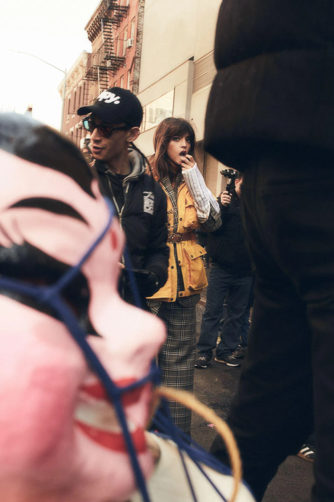
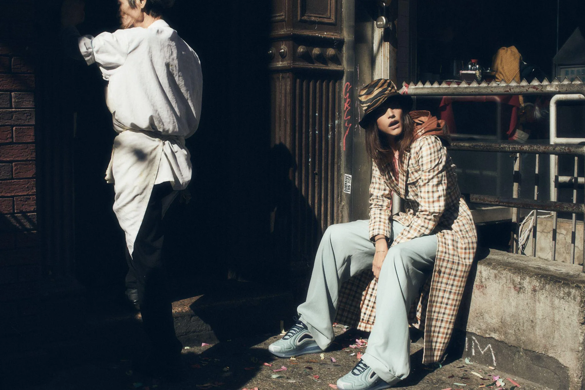
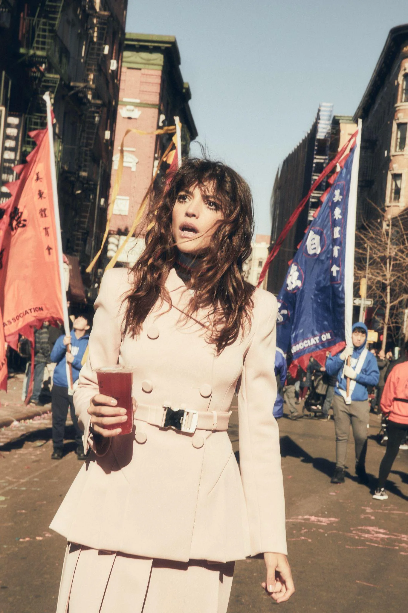

Cuando la calle decide por vos
El Año Nuevo Chino en Chinatown no para por nadie. La producción tenía que adaptarse al ritmo del evento, no al revés. Eso significó trabajar en tiempo real: el fondo cambiaba cada cinco minutos, la gente se movía, los dragones desfilaban sin previo aviso.
Calu entendió el juego desde el primer momento. Esa capacidad de estar presente en el caos es lo que hace que estas fotos tengan la energía que tienen.

El cerdo de peluche que no estaba en el brief
Aparece en una de las tomas y se convirtió en la imagen más compartida de la producción. Nadie lo planeó. Alguien lo sostenía en la multitud, Calu lo tomó con la misma naturalidad que hubiera tomado una cartera de Chanel, y el fotógrafo disparó.
La mejor foto de la producción no fue la que habíamos imaginado.
